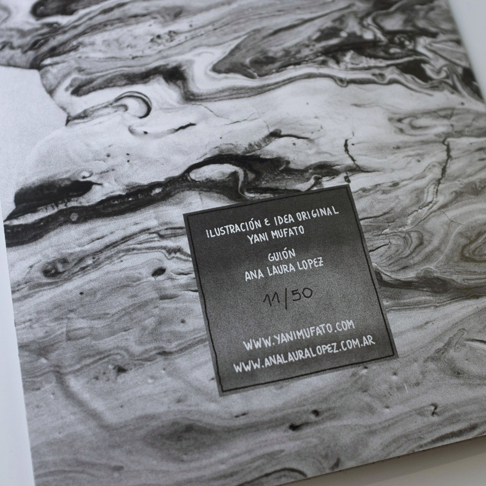
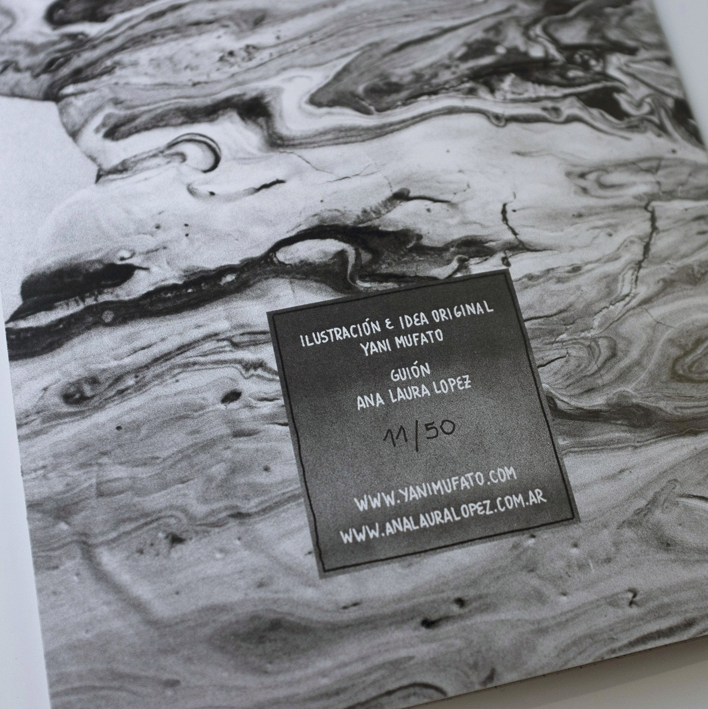

Los Expropiadores
Los Expropiadores cuenta la historia de un grupo de robots que se encuentran en la Tierra reforestando y volviendola habitable. Es el año 2101 y los humanos ya no viven en ella, constantes guerras y la crisis climática hizo que estos tuvieran que emigrar hacia el planeta Marte. En este panorama es donde transita la historia de Kalgan, Arcturus, Terminus y Baroon, trabajadores del Sector 7. Guión: Ana Laura Lopez